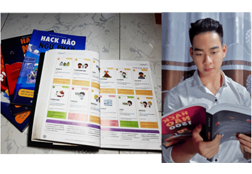

Tin tức
Đời sống sinh viên có “sướng” như bạn nghĩ?
Sinh viên Cao đẳng FPT Polytechnic HCM chuẩn bị sẵn sàng
cho việc trở lại trường thông qua talkshow “Đời sống sinh viên”
với những chia sẻ về các vấn đề thường gặp trong cuộc sống.
Loại bỏ thói quen xấu, trở thành người thành công tại FPT Polytechnic
Thói quen là những hành vi được hình thành và được lặp đi lặp
lại trong hoạt động hằng ngày của con người. Đối với sinh viên,
các bạn đang trong giai đoạn phát triển mạnh về tâm lí và …
Sinh viên FPoly Cần Thơ phát triển văn hóa đọc trong thời đại 4.0

Sự bùng nổ của công nghệ thông tin là một trong những
nguyên nhân làm giảm niềm đam mê đọc sách của rất nhiều
người, thế nhưng với sinh viên Cao đẳng FPT Polytechnic Cần,..